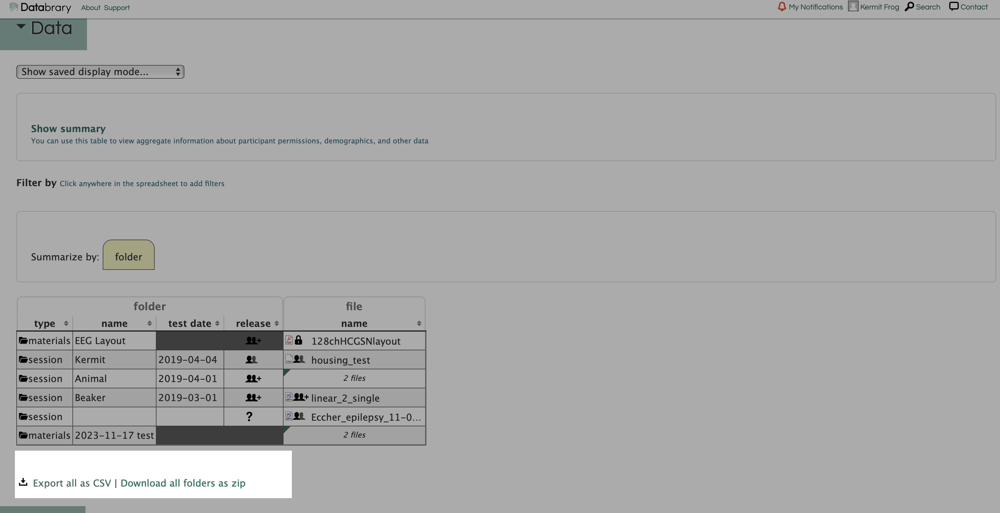
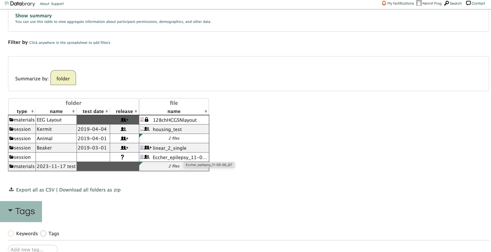
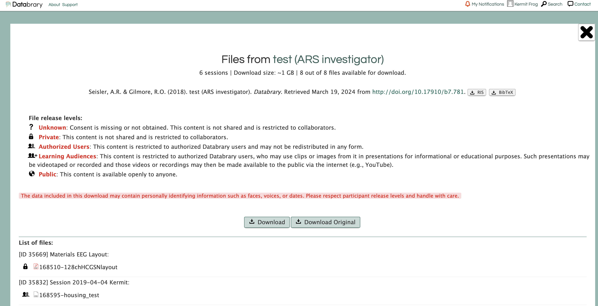

Reusing data
How do I download data on Databrary for reuse
Re-using shared data on Databrary. Downloading raw data from Databrary is a two-step process.
- Look for the
download buttonon the volume profile page.

Sometimes the data is too large to download as a single file. Databrary would take a while to prepare the data for download. If you encountered downloading issues, you can try download the data in smaller chunks. You can download a single session by clicking the Download button on the session profile page. Just double-click the file name.

- The
Downloadbutton will download the data in a format that is compatible with the Databrary platform. If the vedio provided in the sngle session is not trascoding properly, seek the original data by downloading original data. TheDownload Originalbutton offers an option to download the exact file uploaded from the manager of the volume.

When a file is compressed by Databrary, the name of the file with be prepended with the pathway to find the file. If the file is intened to be used for further analysis, it is important to rename the file to a more descriptive name. The adapted name may interupt data mining such as the file name session1 may be renamed to 001-session1. In this case, consider downloading the original data to avoid from renaming massive files.
Ethics of Reusing Data
Authorized Investigators must secure Institutional approvals prior to conducting research with data shared on Databrary. In the U.S. context, conducting secondary analysis on shared video data may not qualify as human subjects research because there is no direct contact with research participants. Still, a research project involving video data reuse may require ethics board or IRB review and approval because the data are identifiable.
How to cite reused data
Shared Data should have a citation on the volume profile page under the ‘How to cite’ heading it takes the format of:
LastName, FirstInitial. (year volume was added). Title of Volume. Databrary. Retrieved Month DD, YYYY from [link to assigned doi].
Find an example of a public volume here
Admin, D., Gilmore, R.O., Seisler, A.R. & Soska, K. (2018). Databrary & Datavyu Help Videos. Databrary. Retrieved February 7, 2023 from http://doi.org/10.17910/B7.686.
RIS and BibTeX formats are also available for download on the volume profile page.
How to cite Databrary
Databrary. (2014). Databrary.org. https://nyu.databrary.org/
Datavyu Team (2014). Datavyu: A Video Coding Tool. Databrary Project, New York University. URL http://datavyu.org.